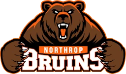

FRC 10434 · Fort Wayne
Northrop High School
CyBears · FRC 10434
Event winnerEvent finalistState qualifier

People named in public sources (2)
- Alfy Krider · Student team representative; Northrop senior in March 2026
Source dated Feb 9, 2026 · Season Evidence from the published research; see date and notes · FWCS names Krider as a team representative on February 9, 2026. March 25, 2026 reporting identifies a Northrop senior and team member; neither source establishes a captain role. Current student status is unverified. · Source publication date; not an appointment date · source 1 · source 2 - Coach Jacobs · Coach; full identity and lead responsibility unverified
Undated source · Season Evidence from the published research; see date and notes · Indexed evidence · An indexed official team Facebook caption uses Coach Jacobs. No first name, post date, stable post permalink, current appointment, or head-coach responsibility was verified. The surname was not matched to a school employee by inference. · Undated source · source 1
Coach Jacobs has only a partial public name and unverified current lead responsibility. Student team captain not verified. Alfy Krider is documented as a representative and 2026 senior, not as a current 2026-27 captain.
2026 season
| Event | After qualifying | Playoffs |
|---|---|---|
| Mishawaka Mar 6–8, 2026 | 38th 9-9 record | Won the event 2nd pick of the #1 alliance |
| Columbus Mar 20–22, 2026 | 26th 8-10 record | Runner-up (lost in the finals) 2nd pick of the #2 alliance |
| Indiana State Championship Apr 17–19, 2026 | 33rd 4-8 record | Not picked for playoffs |
Coming up
Entry lists for 2026–27 events haven’t posted yet. See the full calendar.
Team facts
- Northrop High School · Fort Wayne, Allen County
- Team formed in fall 2024; first official FRC season was 2025.
- 2 FIRST seasons through 2026 · rookie year 2025
- Indiana EPA rank 43 of 68 · world 1,931 of 3,724